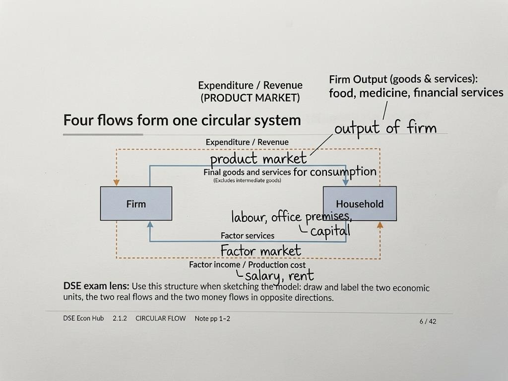

Four flows form one circular system: two economic units, two real flows, and two money flows in opposite directions.

Four flows form one circular system: two real flows and two money flows in opposite directions.
Firms
Produce goods
Demand factor services
Receive sales revenue
Pay production costs
Households
Consume goods and services
Supply factor services
Receive factor income
Make consumption expenditure
Three activities keep the economy moving
Production: turning factors of production into goods and services.
Consumption: using goods and services to satisfy human wants.
Exchange: the buying and selling of goods and services.
Do not collapse these activities into one idea: production creates output, consumption uses it, and exchange transfers it between parties.
Two markets connect the units
Product market: final goods and services are traded. In this model, the real flow from firms to households consists of final consumer goods and services. Firm output (goods & services): food, medicine, financial services.
Factor market: factor services supplied by the owners of factors of production are traded. Factors include capital, land, labour and entrepreneurship. Factor services include labour and office premises.
Factor services are real flows; factor income is the corresponding money flow.
The same flow can have one name from the household perspective and another from the firm perspective.
DSE exam lens
Use this structure when sketching the model: draw and label the two economic units, the two real flows and the two money flows in opposite directions.
Real Flow vs Money Flow
Definitions
Real flow: the flow of goods and services, including factor services.
Money flow: the flow of monetary income and monetary expenditure.
A real flow and its payment are two sides of the same transaction.
Firms → households, money → Factor income / Production cost.
Market value identity
Market value in production = income generated in production = expenditure on final output.
Same period, same final output: the value created by production generates income and is matched by expenditure on that final output.
Intermediate goods are excluded when the market value of final output is measured.
Specialization and Exchange
Specialization
Specialization: different people specialize in producing different goods and services.
Specialize according to lower opportunity cost
Opportunity cost identifies who should produce what.
Two different comparisons
Absolute comparison: who can produce more output with the same time or resources?
Opportunity-cost comparison: who sacrifices less of the other good to produce one more unit?
Absolute productivity is not the decision rule.
Producing a good at a lower opportunity cost than another person means having a comparative advantage in that good.
Exchange makes specialization feasible
No opportunity for exchange.
Each must be self-sufficient.
Specialization cannot take place.
Necessary does not mean sufficient: an opportunity for exchange permits specialization but does not by itself guarantee that people will choose to specialize.
Difference between specialization and exchange
Specialization changes the allocation of production. When production follows lower opportunity cost, it can increase total input.
Exchange allows each specialist to obtain the good she no longer produces. It makes specialization feasible; it does not itself produce the extra output.
Lower opportunity cost guides specialization; specialization changes production; exchange enables access to other goods.
Positive vs Normative
Positive statement
A claim about the objective world that is refutable by facts.
Claim about the objective world + evidence could show it is wrong = positive statement. A positive statement may be true or false.
Normative statement
A claim involving value judgement (subjective).
Desirability: minimum wage legislation is undesirable.
Priority: building artificial islands is more important for Hong Kong than reducing income inequality.
Three cases — every claim belongs to one
Positive
Normative
Neither: true by definition or logic and involves no value judgement.
Example of "neither": "Triangles have three angles" is true by definition. It is not a claim that evidence could refute, and it contains no value judgement.